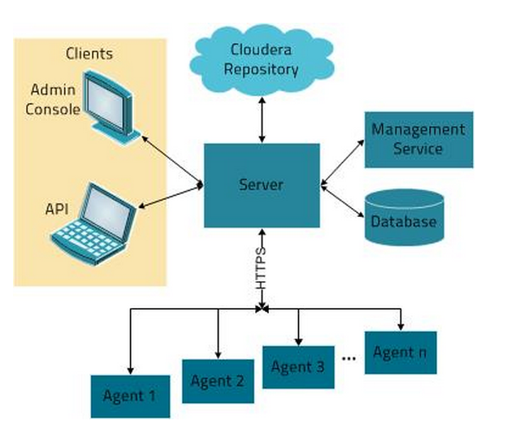
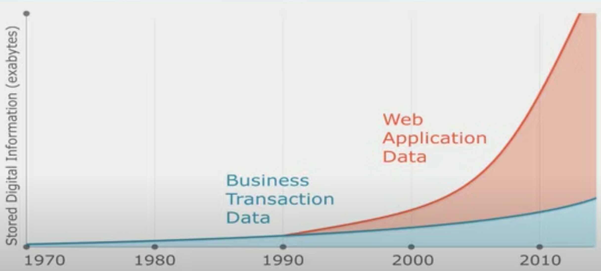
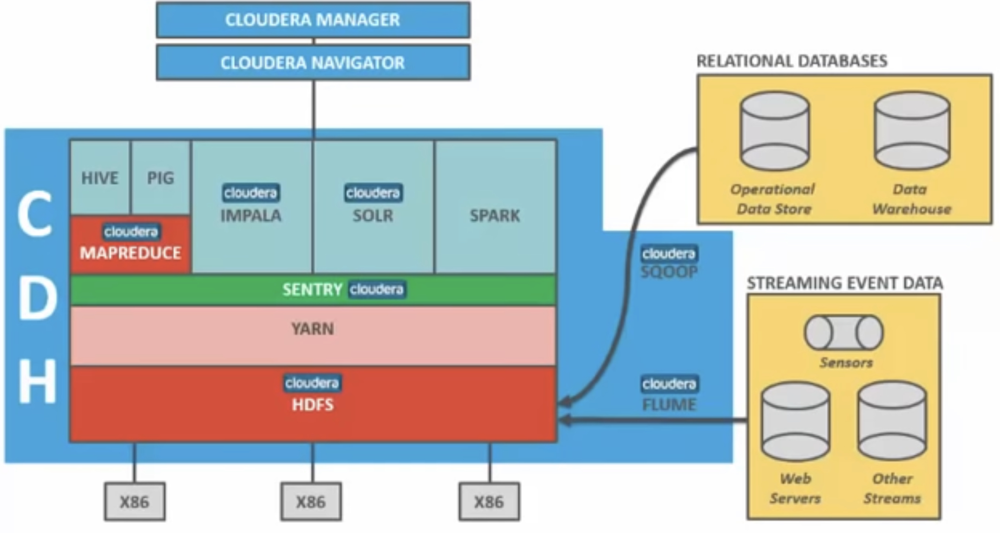
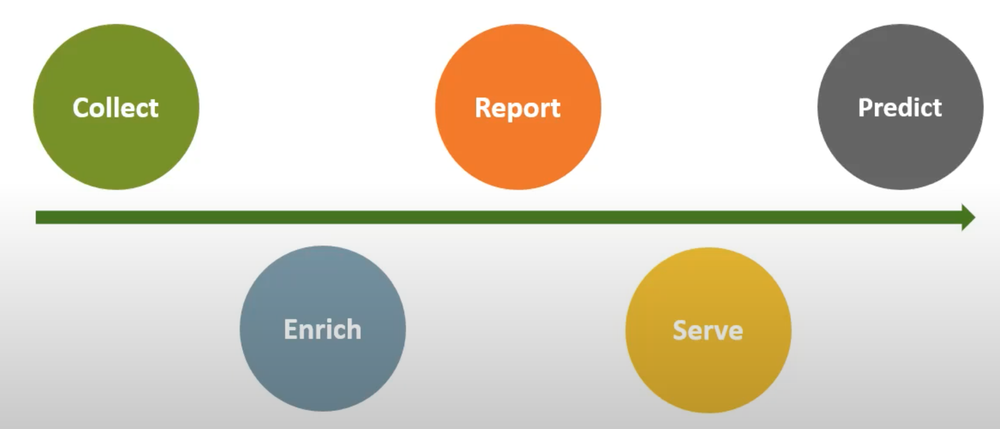
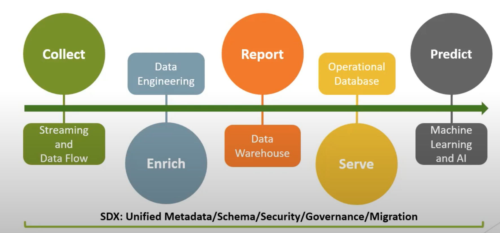
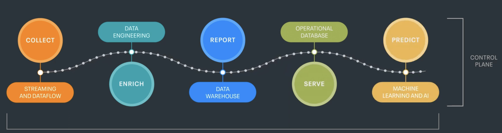
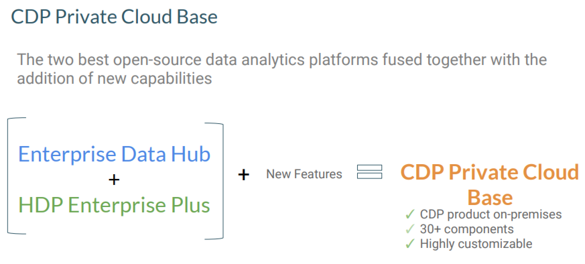

Cloudera Manager Architecture
Cloudera Manager Architecture

Data Growth
Cloudera Manager Architecture
Cloudera Services
- Software Distribution Management
- Process Management
- Host Management
- Resource Management
- User Management
- Security Management
Cloudera RunTime, Manager, Managed Services
Cloudera Ecosystem
Data Life Cycle CDP

Data Life Cycle
Data Life Cycle
Data Life Cycle
CDP Private Cloud

HDP + Data Hub
CDP Private Cloud Major Updates
- Spark 3.0 now available
- Yarn Queue Prioritization & New Queue UI
- Impala Improved Metadata & Parquet native
- Tez replaces Hive as execution engine
- Oozie
- HBase & Phoenix - serial replication now available
- Flume replaced with Nifi , Pig replaced with Hive or Spark , Sqoop insteead of Sqoop2
- Ranger replaces Sentry
- Atlas replaces Navigator
Atlas & Ranger
- Lineage
CDP Major Updates
Sentry replaced Ranger
Navigator replaced Atlas
Flume replaced Cloudera Flow Management
CDP Steps to Upgrade
Upgrade Cloudera Manager
Upgrade the Cluster
Agenda
| Cloudera Overview | |
|---|---|
| History | Brief History of Data Management and Hadoop |
| Hadoop | |
| CDP Update |
“Hadoop has more knobs and parameters to turn than I would prefer.”- Phillip Zalliger
Google's White Paper
“We have designed and implemented the Google File System (GFS) to meet the rapidly growing demands of Google’s data processing needs. GFS shares many of the same goals as previous distributed file systems such as performance, scalability, reliability, and availability”
Cloudera the Company
75-80 percent of time is towards open source
13 out of 20 project components are built in house
Cloudera's mission is to make data more accessible and help companies leverage data
Customer Archetypes
BI Analysts
Data Scientists
Data Engineers
Admins